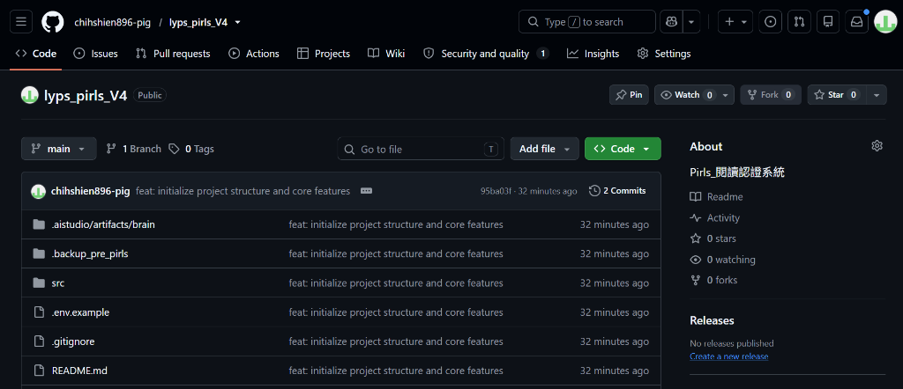
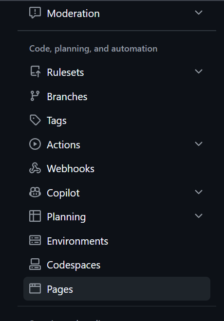
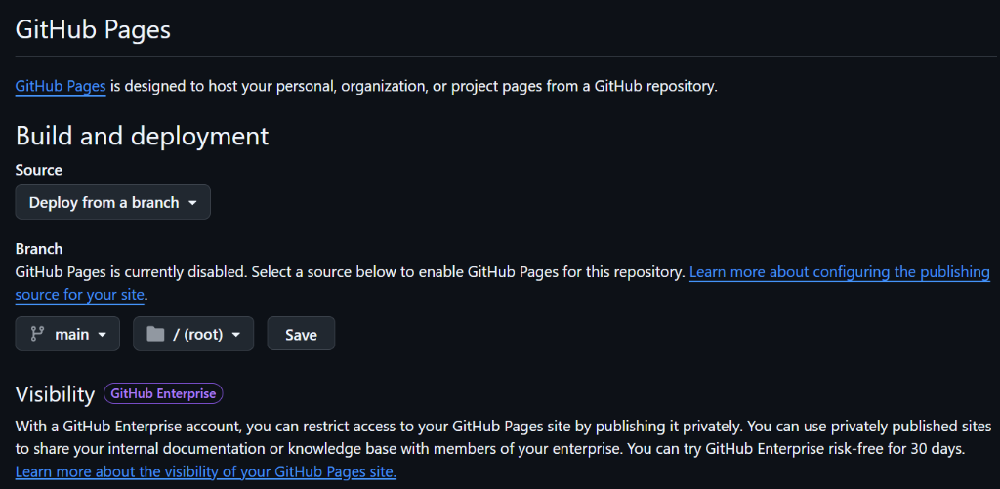
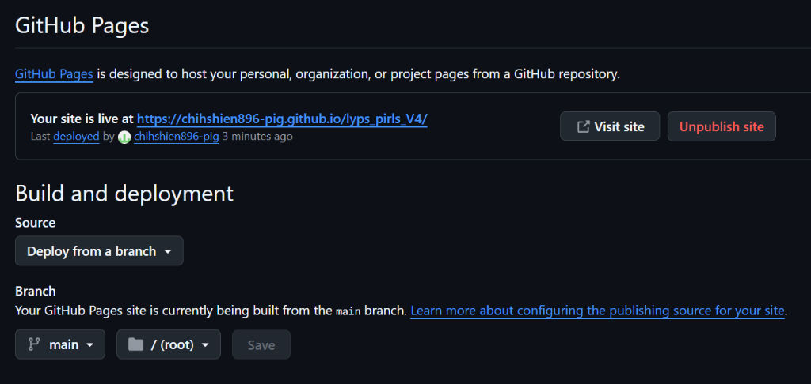

如何設定 GitHub Repo 為公開 Pages？
只要 5 個直覺點擊動作，無須自建 Web 伺服器，將您的 HTML 簡報、互動網頁、成果作品一鍵發布至全球高可用 CDN！
1. 最速直接發布
免寫任何設定檔，在 GitHub 介面勾選 main 分支與根目錄，按下 Save 立即生效。
2. 全球 CDN 與 HTTPS
GitHub 原生提供免費 SSL 加密憑證、超低延遲全球邊緣節點加速，完全零維護負擔。
3. Git 推送秒級同步
本地更新只需 git push，雲端自動同步重構，多個 HTML 頁面獨立網址共存。
開啟專案倉庫，進入 Settings（設定）
找到專案最核心的管理中樞，開啟部署配置權限。
瀏覽專案儲存庫首頁
開啟瀏覽器，登入 GitHub 並進入您要發布的 Repository（例如：lyps_pirls_V4 或 pirls-reading-1128）。
點擊頂部選單最右側「Settings」
在專案頂部頁籤中，點選齒輪圖示的 Settings 選項，進入倉庫設定面板。
• Public 公開儲存庫：免費版 GitHub 帳號對 Public 儲存庫無限制提供 Pages 服務；若是 Private 則需升級為付費帳號或將 Repo 設為 Public。

在左側選單點選「Pages」
於眾多自動化與程式碼設定項目中，切換至 GitHub Pages 專用配置中心。
尋找側邊欄分組
向下滾動左側導覽目錄，找到 Code, planning, and automation（程式碼、規劃與自動化）分組。
點選「Pages」分頁標籤
點選帶有網頁視窗小圖示的 Pages，畫面中央將載入 GitHub Pages 的管理與建置介面。

設定 Build and deployment（來源與分支）
根據專案架構選擇最適合的部署模式（最速分支發布 vs. 自動化 Actions）。
設定步驟：
- 在 Source（來源） 下拉選單選取
Deploy from a branch。 - 在 Branch 下方將分支選為
main（或舊版master）。 - 目錄資料夾選
/ (root)根目錄。 - 按下 Save（儲存） 按鈕即可！
.github/workflows 並在每次 push 時自動編譯發布。

靜候 1~2 分鐘，網站正式發布成功！
查看綠色成功通知與專屬網址，一鍵點擊即可公開瀏覽。
GitHub 背景自動建置部署
按下 Save 之後，GitHub 會在背後建立排程打包。只需靜候約 60 ~ 120 秒，重新整理網頁。
頂端出現綠色「Your site is live at...」
當畫面頂部浮現綠色通知橫幅時，即代表部署全面成功！隨附即時上線網址。
https://<username>.github.io/<repository-name>/
• Unpublish site：若日後需暫時下線或停止公開託管，隨時可在此解除發布。

同一個 Repo，如何部署多份不同 HTML 簡報？
活用靜態檔案路徑映射，一套專案倉庫輕鬆承載多個獨立作品與簡報！
檔案：
index.html網址：
https://clive520.github.io/pirls-reading-1128/
檔案：
github-pages-tutorial.html網址：
https://clive520.github.io/pirls-reading-1128/github-pages-tutorial.html
檔案：
script.html網址：
https://clive520.github.io/pirls-reading-1128/script.html
git commit -m "feat: add github pages guide slide"
git push origin main
github-pages-tutorial.html、lecture-part2.html。避免使用中文、空白或特殊符號，確保網址乾淨且在各國行動裝置與社群分享時不亂碼。
一分鐘總結與常見問題排除
掌握核心流程，隨時排除常見上線疑難雜症。
② 左側側邊欄點選 Pages
③ Source 選 Deploy from a branch
④ Branch 設為 main 與 / (root) ➔ 點擊 Save
A: GitHub 需要排程建置約 1~2 分鐘。可點擊專案頂部的「Actions」頁籤查看目前 Build / Deploy 進度，看到綠色勾勾完成後重新整理 Pages 頁面即可。
A: 檢查網址路徑大小寫是否完全相符；確認根目錄下是否真有該 html 檔案；確認選擇的分支是否為最新包含檔案的
main。
A: 瀏覽器常有快取，請使用 Ctrl + F5 強制重新整理或以無痕視窗開啟確認。